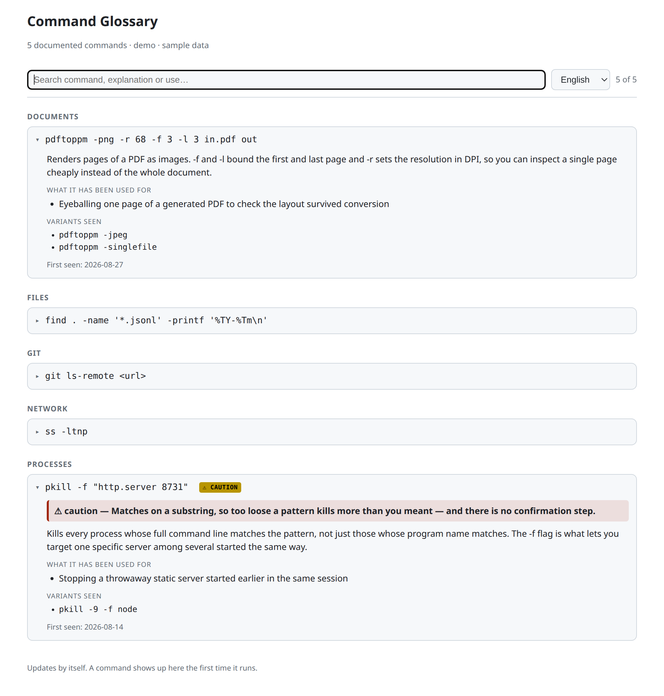

Pick a stage
I worked at every point of the path data takes through the product. Each stop is a codebase, and the problem there I’d most want to be asked about.
Stage 01 · Orchestration
The data‑pipeline platform
Scheduled workflows that build, validate and publish the datasets everything downstream depends on. This is where most of my six months went: retry and failure behaviour, task‑level reliability, and release runs. Almost half of everything I shipped landed here.
The problem I’d pick
Seventeen modules that all failed the same way
- The symptom
- Scheduled workflows died on transient errors. A warehouse timeout or a dropped connection would take down a whole run, and someone would re‑trigger it by hand the next morning. It wasn’t one bug — it was the same missing behaviour repeated everywhere.
- What was going on
- Retry policy was set per task by whoever wrote each task, so coverage was accidental rather than designed. I audited it across seventeen modules, which meant reading a lot of code I hadn’t written and working out which steps were safe to run twice.
- What I did
- Scoped the project myself, split it into per‑module subtasks and worked through them as a series of small reviewable changes. Added retry policies where reruns were safe — and in one case removed a default retry, because re‑running that step could register the same schema twice. Blanket retries would have been the easy answer and the wrong one.
- What I took from it
- A retry is a claim that the operation is idempotent. On a step that isn’t, you’ve turned a loud transient failure into quiet data corruption. Doing this seventeen times also gave me the first real map I had of how the platform fits together.
Stage 02 · Modelling
The analytics modelling layer
Transformations over warehouse data — the models that turn raw inputs into the metrics the product actually shows. Smaller in volume than the rest of my work and sharper in consequence: changing which metrics flow into a currency‑conversion model, and the tests around them.
What it taught me
A query that returns nothing looks exactly like a query that’s correct
- The symptom
- I was inventorying records ahead of a decommission — work where the whole point is an accurate count — and got back a confident zero. Nothing errored. Zero is a perfectly plausible answer, so I nearly reported it.
- What was going on
- The storage layer wrote one string form of an identifier and the API handed back a different one. My filter used the form I’d seen in the API response, so it matched nothing at all in storage. A wrong filter and an empty result set are indistinguishable from the outside.
- What I did
- Recounted from the underlying data, confirmed the two forms, and now run any filter unfiltered first — if the unfiltered count is also zero, the problem is my connection or my scope; if it isn’t, the problem is my predicate.
- What I took from it
- An empty result is not evidence. It’s the absence of evidence. Anywhere a count feeds a decision, I now prove the query can return something before I trust it returning nothing.
Stage 03 · Validation
The schema‑validation service
Data‑quality scans that sit in the publish path and decide whether a dataset is fit to go out. Two jobs here: making the scans survive a third‑party outage instead of failing the whole run, and fixing a validation job that failed every night.
The problem I’d pick
The job that only failed when nobody was watching
- The symptom
- A validation job failed every single night and passed every single time we ran it by hand. The worst possible shape: not reproducible, and therefore very easy to keep re‑triggering instead of fixing.
- What was going on
- The nightly run resolved a dataset version that only contained the subset an upstream promotion step had copied into it; anything outside that subset resolved to nothing. Running by hand picked up a different, complete version — which is exactly why it passed. The manual run wasn’t reproducing the failure, it was avoiding it. Worse, the render step aborted on the first missing item, so one gap hid every gap behind it.
- What I did
- Gated the trigger so the job only fires once the data it depends on is genuinely present, instead of firing on a schedule and hoping. Filed the abort‑on‑first‑miss behaviour as its own issue — collecting all the gaps in one pass is a different change and shouldn’t ride along on this one.
- What I took from it
- “It works when I run it” is information about your run, not about the job. When manual and scheduled behaviour disagree, the difference between the two environments is the bug. That reframing is the most portable thing I learned all summer.
Stage 04 · API
The portfolio‑management backend
The service behind portfolio editing. My work here was about behaviour at the edges rather than new features: what happens under load, on oversized input, and what the caller is told when something goes wrong. I ended up chasing two separate out‑of‑memory failures here, which is how I learned to read them.
The problem I’d pick
A 500 that should have been a 413
- The symptom
- Editing a very large portfolio took the service down with an out‑of‑memory kill. Users got a generic 500 Internal Server Error, which tells them nothing they can act on. The on‑call rota got a crashed service, which tells them something is badly broken.
- What was going on
- The request was fully buffered and parsed before anything checked its size. Past a threshold the process ran out of memory — and OOM kills don’t announce themselves as OOM kills, so the logs read like an unexplained death rather than a size problem.
- What I did
- Traced the crash back to payload size, then added a guard that rejects oversized edits with 413 Payload Too Large before the body is buffered. About a hundred lines with tests — a small change that took most of its time in the diagnosis.
- What I took from it
- Status codes are part of the product, not plumbing. A 500 says “we broke”; a 413 says “this input is too big, send less” — the second a user can act on and the on‑call can safely ignore. Choosing the right failure is design work.
Stage 05 · Interface
The customer‑facing web application
Where the whole pipeline finally becomes something a person looks at. Reporting screens, a metric screener, report‑centre navigation, and internationalisation — including a rewrite where a reviewer talked me out of my first instinct, which I’m still grateful for.
The problem I’d pick
Translations that were never missing
- The symptom
- A metric screen rendered raw translation keys instead of labels. The obvious diagnosis, and the one the console appeared to support, was a missing set of translations.
- What was going on
- Two layers down. Those labels lived under a different translation namespace than the one being looked up, and that namespace had never been registered with the dynamic‑prefix resolver. So the resolver threw its own “prefix not defined” error before the i18n library ever got as far as reporting a missing key. The first error was masking the real one — and the real one wasn’t a missing translation at all.
- What I did
- Registered the namespace and resolved the lookup against where the strings actually live. The fix involves a trade‑off that looks wrong out of context, so I left a comment at the site explaining why — specifically so the next person doesn’t “fix” it back.
- What I took from it
- The first error message isn’t always the first error. When one layer fails early it hides the layer you needed to see. And a surprising decision without a comment beside it has a very short life.
Stage 06 · Reports
The report‑template service
Regulatory reports generated as documents, localised per country. I did a full pass over one country’s variant of an EU Taxonomy report template — less algorithmically interesting than the rest of the pipeline, and the place I learned most about the domain itself.
What it taught me
The domain is the specification
- The situation
- Regulatory reporting templates aren’t a design choice — the layout, the fields and the wording are set by a regulation, and getting one wrong isn’t a cosmetic bug. I couldn’t reason my way to the right answer from the code alone.
- What I did
- Stopped trying to infer intent from the existing templates and went to the people who knew the regulation. Most of the work turned out to be asking precise questions and then encoding the answers faithfully.
- What I took from it
- In a regulated domain, “what does the code do” is the wrong first question. Some requirements can’t be derived, only looked up — and knowing which kind you’re facing saves a day of clever guessing.
Spans the pipeline · Tests
The end‑to‑end suite
The tests that run against the whole path rather than any one stage. I hardened a smoke test that was paging the on‑call rota for reasons that turned out not to be outages — and spent enough time staring at red builds to form opinions about them.
Three things that cost me time once each
- A suite that goes green on retry has stopped being a suite. The frontend CI failed on things unrelated to my change often enough that re‑running became reflex — and reflex re‑running is exactly how a real failure gets waved through. I started saying “known flaky” or “I don’t know why this failed” out loud in the merge request instead of quietly hitting retry.
- A degraded staging environment doesn’t slow verification down, it invalidates it. If I can’t tell “my change is broken” from “the environment is unwell”, I haven’t verified anything — and saying so is more useful than shipping on a shrug.
- A test that wakes someone at 3am should be worth waking them for. An alert that fires on something recoverable trains people to ignore alerts, which costs you the one that matters. Tightening what the smoke test actually asserts was worth more than making it pass.
Off‑pipeline · How I work
Review, AI, and a tool I built for myself
The parts that aren’t attached to any one codebase: how I found work, what review taught me, how I use AI tooling, and the one piece of software here that’s mine.
Finding my own work
More than a third of the tasks I closed were ones I found and filed myself — a bug noticed while working on something adjacent, a piece of reliability nobody had asked for yet. I started the six months receiving work already broken into pieces and ended it breaking the pieces out myself, including the seventeen‑module reliability project, which I scoped and split into subtasks before writing any of it. I finished with nothing left open on the board.
Code review
Over sixty merge requests went through review, and the feedback changed how I work more than any single bug did. The most useful recurring note was structural: my instinct on a rewrite was to branch inside the existing component and let old and new behaviour share one template. A reviewer pushed back — pull the new implementation into its own component instead. The reason stuck: the cost of mixing two implementations isn’t paid by me while I write it, it’s paid by whoever opens the file next and has to work out which half is live.
And the unflattering one: in July I opened six merge requests in a single day, then four more shortly after, all needing the same reviewer.
Median time‑to‑merge went from about an hour in June to more than twenty in July, and one change sat for a week. Nothing was wrong with the code. I’d just discovered that my own throughput isn’t the constraint on a team — review capacity is, and I had aimed all of it at one person. I now stagger related changes and say which one to look at first.
Working with AI tooling
I use AI coding tools heavily, and I’d rather say so plainly than have it be a surprise. The part worth knowing is what I use them for. Going back through my own session history, the question I asked far more than any other was some version of “here’s a ticket — which repositories does this live in, and how would you approach it?” Not “write this for me.” On a platform of seven codebases where one ticket can touch three, the expensive part for someone new isn’t writing the change, it’s finding where it goes. That is the part I delegated.
The rest went on tooling friction, unfamiliar concepts, and drafting the message that laid out a release decision for the team to choose from. What I did not delegate is every problem on this page: whether a retry is safe on one specific step, noticing that two environments differ, knowing that a comment needs to exist so a future colleague doesn’t undo you. I use it for breadth and reach for it late on judgement — it’s a fast way to produce a plausible answer, and “plausible” is the one thing you can’t afford in a publish path.
A tool I built because I kept asking the same question
Six months of unfamiliar command‑line work meant I kept meeting shell commands I half‑recognised, looking them up, and meeting them again a fortnight later having forgotten. So I built a glossary that removes the second half of that loop: it hooks into my editor, captures every command that’s new to me the moment it runs, and fills in a plain‑language explanation in the background. The notebook builds itself while I work instead of being one more thing to maintain. It has gone through five rounds of its own since — installer to editor plugin — and it’s the only code here I own; everything else lives in private repositories.

What I can work in
Productive now
- Python — pipeline tasks, services
- Apache Airflow — DAGs, retries, local runs
- Vue — components, i18n
- Git & GitLab — review flow, CI
- SQL — reading and writing
Would need a ramp
- dbt — models and tests
- Cypress — end‑to‑end suites
- Snowflake — querying, not admin
- HTTP API design — limits, status codes
Learning next
- Containers and deployment
- Observability — instrument before debugging
- Idempotency patterns — properly, not by incident
- Testing strategy — what to test at which layer
Domain
- Sustainability & ESG data
- EU Taxonomy reporting
- Dataset release cycles
- Portfolio metric aggregation